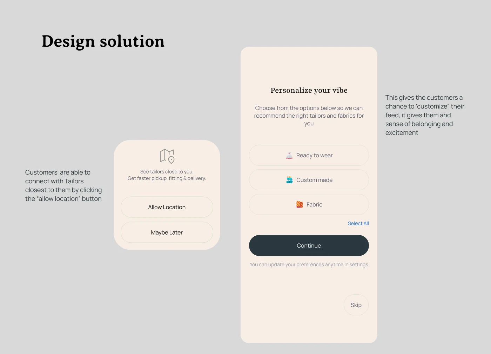
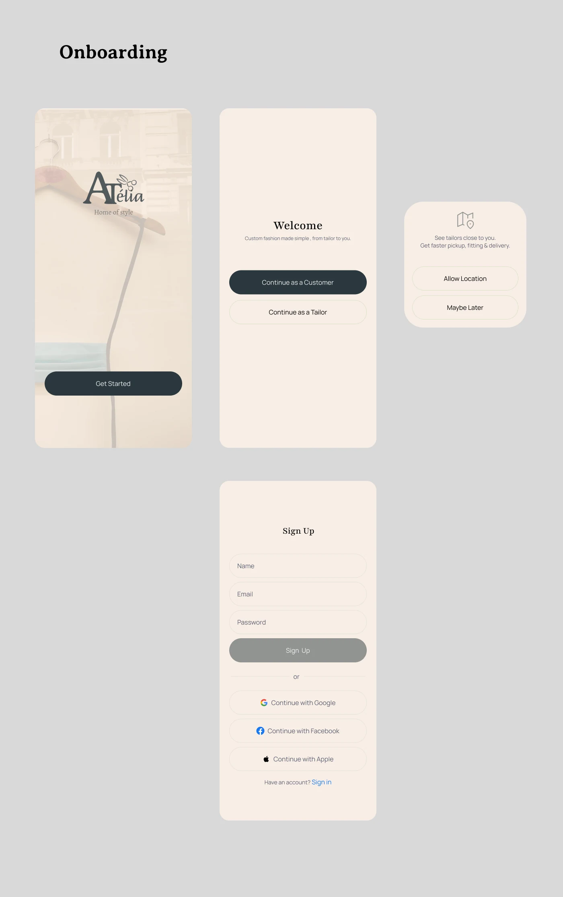
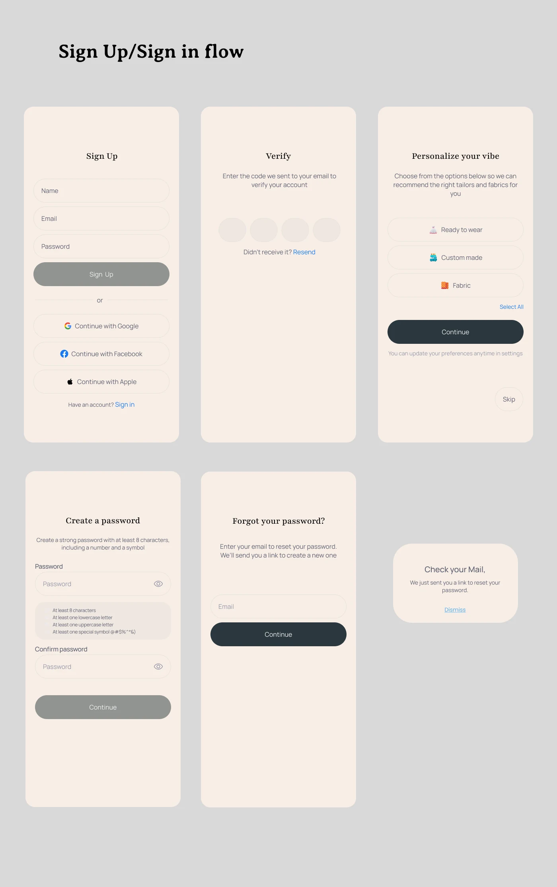
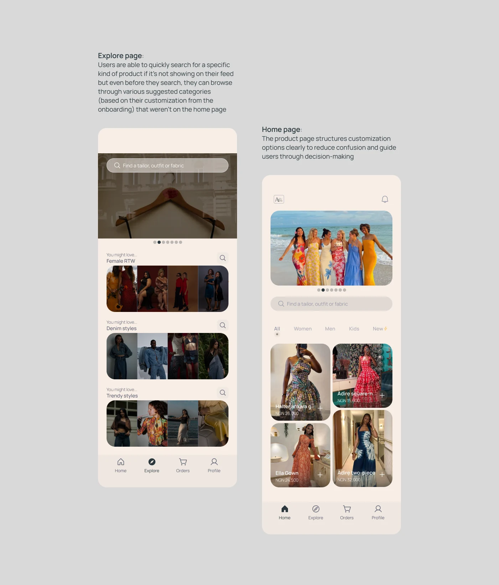
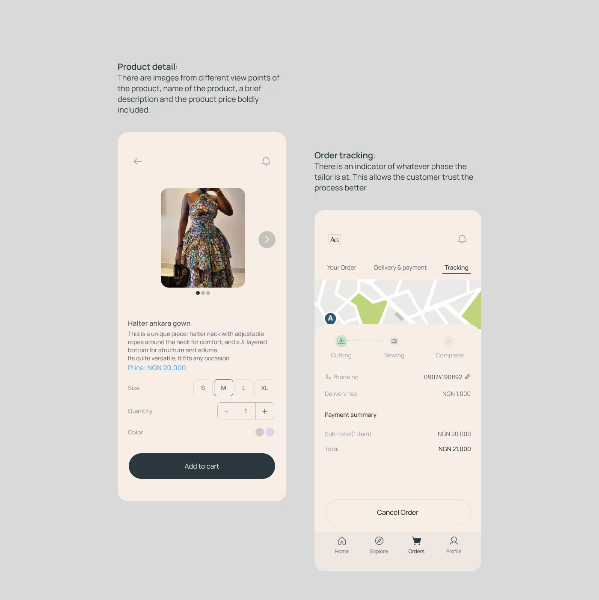
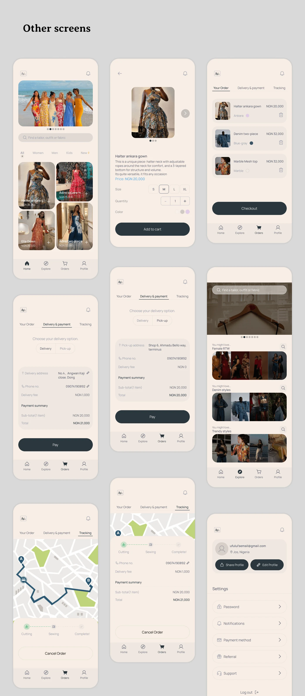

Case study 02 · E-commerce · Mobile
Atelia
A seamless e-commerce experience for custom tailoring
RoleProduct Designer, end to end
FocusCustom tailoring, communication, trust
PlatformMobile first

Project overview
This project explores the design of a digital platform that connects users with professional tailors, enabling them to order custom clothing seamlessly online.
The goal was to simplify the traditionally complex tailoring process into a structured, user-friendly digital experience.
The problem
Traditional tailoring is largely offline.
It requires multiple visits, unclear communication, and manual measurements, making the process time-consuming and inefficient for modern users.
Additionally:
ResultLow convenience + low trust + high friction
The goal
Design a platform that:
My role
- Product Designer (end-to-end)
- UX Research (conceptual)
- Wireframing & UI Design
- User flow design
Key insights
- Users want convenience without losing personalization
- Measurement accuracy is a major concern
- Communication gaps lead to poor outcomes
- Too many steps = drop-off
User flow
Five steps from browsing to tracking
Key decisions
- Simplified customization into structured steps
- Introduced guided measurement input to reduce errors
- Designed clear communication touchpoints
- Prioritized mobile-first interaction
Design solution
Finding nearby tailors, and a feed that feels like yours

Onboarding
Customer or tailor, from the first screen


Home and explore
Structured so browsing leads to a decision

Product detail and order tracking
Know the product, then trust the process

Other screens
Cart, delivery, payment, tracking and profile

Back to the rest
More work →Have a product that needs figuring out?
Let's talk.
© Lulu 2026 · Designed in Jos, Nigeria.